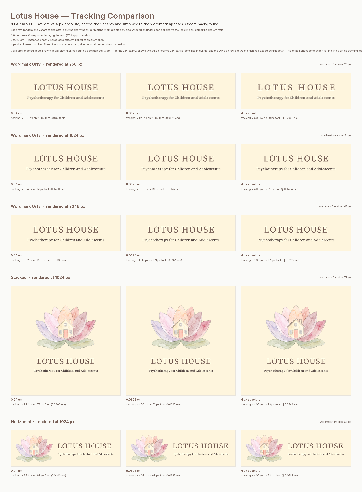

Tracking Comparison
Three letter-spacing treatments for the LOTUS HOUSE wordmark, side by side, across the sizes where the choice matters most. Cream background throughout — the most flattering context for tracking evaluation.
- 0.04 em Tighter, uniform
- Mentioned once in the Session 5 doc as a CSS approximation. Looks one consistent way at every size — but tighter than what Aleksandra approved on Sheet 3 in absolute pixel terms.
- 0.0625 em ✓ Chosen — Sheet 3 Large match
- Matches Sheet 3's Large card exactly (4 px tracking on 64 px font). At smaller render sizes, produces tighter absolute spacing than Sheet 3 Medium/Small. At larger sizes, produces airier spacing. Picked after cross-device review for being the most balanced read across all three sizes.
- 4 px absolute Sheet 3 actual
- What Sheet 3 actually used at every card size. Doesn't translate to a single em ratio — implied em ranges from 0.0625 (Large) to 0.156 (Small). Maintains an airy feel at small render sizes by design; gets tight at very large render sizes (4 px is only 2.4% of a 163 px font).

What to look for
The 256 px row reveals the small-size trade-off
At small render sizes, 4 px absolute produces dramatically airier spacing than the em-based options. This is because the same 4 px gap is a much larger proportion of a small font (4 px ÷ 20 px font ≈ 20% tracking) than of a large font. Aleksandra approved this airiness implicitly by signing off on Sheet 3, where the Small card had effectively 0.156 em tracking.
The 2048 px row reveals the large-size trade-off
At large render sizes, 4 px absolute looks tight — 4 px on a 163 px font is only 0.024 em, much tighter than either uniform proportional option. Conversely, 0.0625 em looks the airiest at this size, which may or may not be the intended visual feel for hero/print contexts.
The 1024 px row is the comfortable middle
At the design-baseline size, the three methods produce very similar-looking results. That's because 1024 px is close to where Sheet 3's Large card sat. The choice only becomes consequential at the extremes.
How the decision was reached
There was no universally-optimal value across all three sizes — each method was best at some sizes and worst at others. 0.04 em erred tight; 0.0625 em erred slightly airy at very large sizes; 4 px absolute erred airy at small / tight at large. After reviewing the comparison sheet on macbook + iPhone on 29/04/2026, 0.0625 em read as the most consistent and balanced across the full range — including the small-render context where it is slightly tighter than Sheet 3 Small originally rendered. The ratio is now canonicalised as the LOTUS HOUSE wordmark spec for all design-time renders (composed layouts, brand guidelines, future exports).
A fourth path — using different em ratios per size band (the kind of optical-sizing proper typography systems use) — was discussed and parked. A single em ratio is simpler to apply consistently and the visual difference at the extremes is small enough that the simplicity wins.